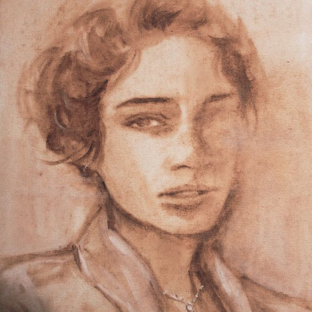
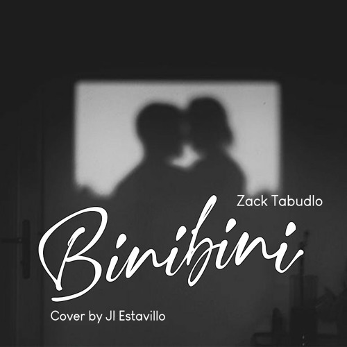
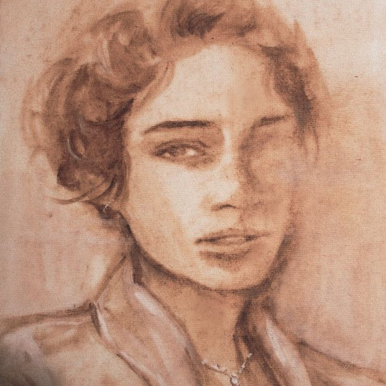
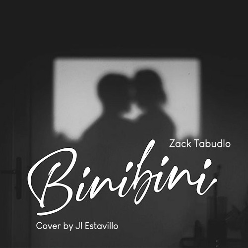
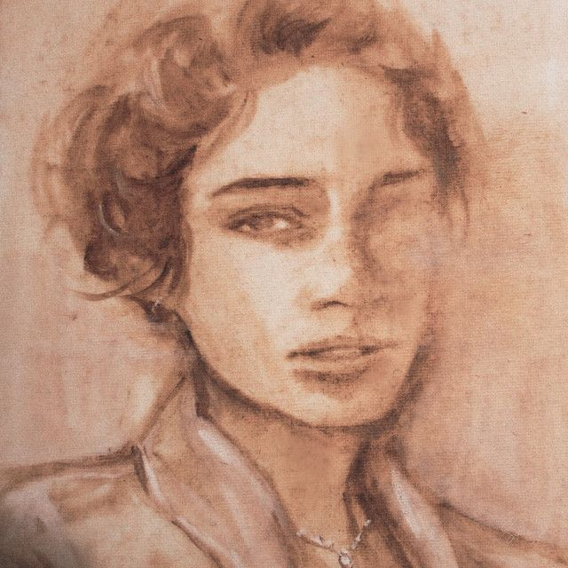
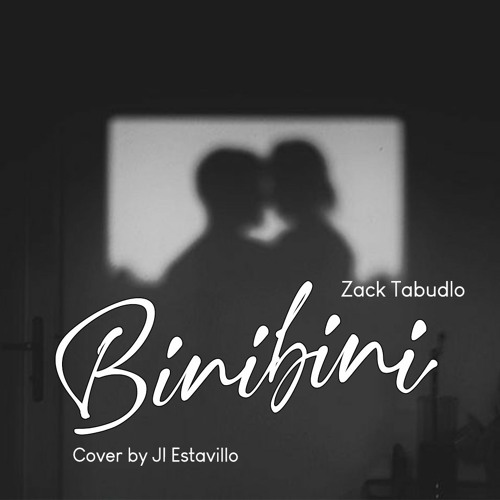

Welcome! This is a page based from kinds of music that I like. These are some of the musics that I like to listen to from time to time. Original Pinoy Music, Alternative Indie, and Chill Rhythm and Blues is the kind of music genre i listen to the most. This page contains information to top songs i listen to from my top 3 music genre.
Original Pilipino Music(OPM)


Alternative/Indie


Chill Rhythm and Blues